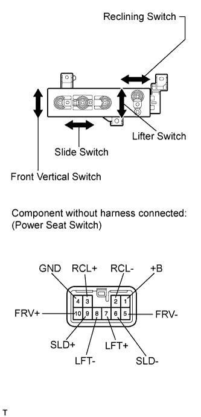
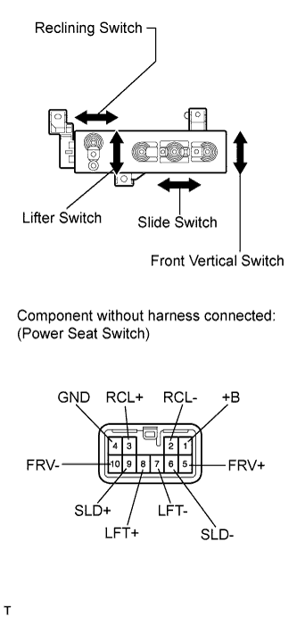

POWER SEAT SWITCH (w/o Seat Position Memory System) > INSPECTION |
| 1. INSPECT FRONT POWER SEAT SWITCH LH |
 |
Measure the resistance according to the value(s) in the table below.
| Tester Connection | Switch Condition | Specified Condition |
| 9 (SLD+) - 1 (+B) | Front | Below 1 Ω |
| 6 (SLD-) - 4 (GND) | ||
| 9 (SLD+) - 4 (GND) | Off | |
| 6 (SLD-) - 4 (GND) | ||
| 9 (SLD+) - 4 (GND) | Rear | |
| 6 (SLD-) - 1 (+B) |
| Tester Connection | Switch Condition | Specified Condition |
| 10 (FRV+) - 1 (+B) | Up | Below 1 Ω |
| 5 (FRV-) - 4 (GND) | ||
| 10 (FRV+) - 4 (GND) | Off | |
| 5 (FRV-) - 4 (GND) | ||
| 10 (FRV+) - 4 (GND) | Down | |
| 5 (FRV-) - 1 (+B) |
| Tester Connection | Switch Condition | Specified Condition |
| 7 (LFT+) - 1 (+B) | Up | Below 1 Ω |
| 8 (LFT-) - 4 (GND) | ||
| 7 (LFT+) - 4 (GND) | Off | |
| 8 (LFT-) - 4 (GND) | ||
| 7 (LFT+) - 4 (GND) | Down | |
| 8 (LFT-) - 1 (+B) |
| Tester Connection | Switch Condition | Specified Condition |
| 3 (RCL+) - 1 (+B) | Front | Below 1 Ω |
| 2 (RCL-) - 4 (GND) | ||
| 3 (RCL+) - 4 (GND) | Off | |
| 2 (RCL-) - 4 (GND) | ||
| 3 (RCL+) - 4 (GND) | Rear | |
| 2 (RCL-) - 1 (+B) |
| 2. INSPECT FRONT POWER SEAT SWITCH RH |
 |
Measure the resistance according to the value(s) in the table below.
| Tester Connection | Switch Condition | Specified Condition |
| 9 (SLD+) - 1 (+B) | Front | Below 1 Ω |
| 6 (SLD-) - 4 (GND) | ||
| 9 (SLD+) - 4 (GND) | Off | |
| 6 (SLD-) - 4 (GND) | ||
| 9 (SLD+) - 4 (GND) | Rear | |
| 6 (SLD-) - 1 (+B) |
| Tester Connection | Switch Condition | Specified Condition |
| 5 (FRV+) - 1 (+B) | Up | Below 1 Ω |
| 10 (FRV-) - 4 (GND) | ||
| 5 (FRV+) - 4 (GND) | Off | |
| 10 (FRV-) - 4 (GND) | ||
| 5 (FRV+) - 4 (GND) | Down | |
| 10 (FRV-) - 1 (+B) |
| Tester Connection | Switch Condition | Specified Condition |
| 8 (LFT+) - 1 (+B) | Up | Below 1 Ω |
| 7 (LFT-) - 4 (GND) | ||
| 8 (LFT+) - 4 (GND) | Off | |
| 7 (LFT-) - 4 (GND) | ||
| 8 (LFT+) - 4 (GND) | Down | |
| 7 (LFT-) - 1 (+B) |
| Tester Connection | Switch Condition | Specified Condition |
| 3 (RCL+) - 1 (+B) | Front | Below 1 Ω |
| 2 (RCL-) - 4 (GND) | ||
| 3 (RCL+) - 4 (GND) | Off | |
| 2 (RCL-) - 4 (GND) | ||
| 3 (RCL+) - 4 (GND) | Rear | |
| 2 (RCL-) - 1 (+B) |